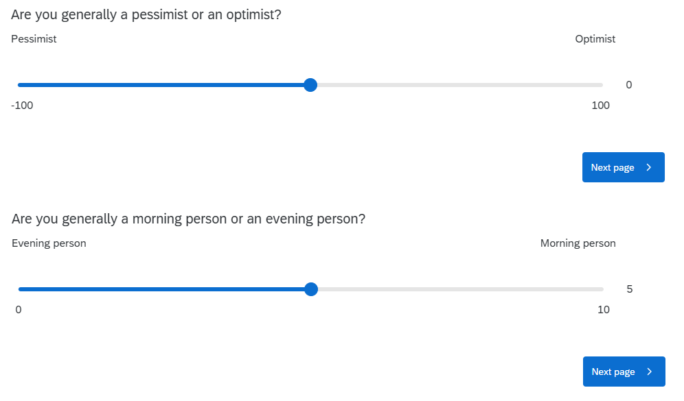

Pick someone new to be the driver this week. They will type the code. The rest of you are navigators, you need to tell the driver where to go (i.e., what to type!).
Tell your driver where to go (i.e., what to type)!
Question 1
We’re continuing to use the same dataset for the next couple of weeks (the survey that many of you completed in the first week). The data are stored at https://uoepsy.github.io/data/dapr1_2526_survey.csv (Check back to your work from the previous weeks to remind yourself how to get the data into R).
Calculate the Inter Quartile Range (IQR) for:
distance_born - the distances from Edinburgh that the respondents were born. The IQR is appropriate here because the variable is highly skewed.
spicy_num - the levels of spice that respondents like. The IQR is appropriate here because the variable is ordinal.
For the sleep-quality, procrastination, and multitasking variables, respondents were given the scale from 0 to 100. That doesn’t necessarily mean that people used the whole scale.
For the same variable you chose in the previous question, calculate its range.
In one call to summarise() (that is, using the function only once), calculate descriptive statistics of central tendency and variability for all three variables sleepqual, procrast and multitask.
The survey also included questions asking about whether people perceive themselves as pessimists vs optimists (the outlook variable), and as an “evening person” vs a “morning person” (the ampm variable).

TODO UPDATE ONCE SURVEY DATA IS IN
Fill in the blanks in this description.
A total sample of (1)______ participants completed the survey.
In their general outlook on life (measured with (2)______), participants reported an average score of (3)______ ((4)______), indicating a (5)______ disposition overall.
For chronotype — as measured on a sliding scale from 0 (“evening person”) to 10 (“morning person”) — the distribution was (6)______. Consequently, the central tendency for chronotype is best described by the (7)______ of (8)______ ((9)______), with scores ranging from (10)______ to (11)______.
Hints
how many people are there in the data? (check back to week 2, or the Read in and inspect data flashcard)
give a brief explanation of how the optimism/pessimism was measured. Otherwise the reader won’t really know what any of the numbers mean!
calculate an appropriate measure of central tendency for the outlook variable.
calculate an appropriate measure of dispersion for the outlook variable.
what do 3 & 4 tell you about the sample?
describe the shape of the distribution of the ampm variable (you’ll need to plot it!)
what metric is best for characterising the central tendency of the ampm variable
calculate an appropriate measure of central tendency for the ampm variable.
calculate an appropriate measure of dispersion for the ampm variable.
calculate the range for the ampm variable.
calculate the range for the ampm variable.
Solution 5. A total sample of 41 participants completed the survey.
In their general outlook on life (measured with a sliding scale from -100 to 100, with ‘Pessimist’ and ‘Optimist’ at the extreme labels), participants reported an average score of 9.878 (SD = 26.442), indicating a paste(adj,disp) disposition overall.
For chronotype — as measured by a sliding scale from 0 (“evening person”) to 10 (“morning person”) — the distribution was (6) TODO . Consequently, the central tendency for chronotype is best described by the (7) TODO of (8) TODO ((9) TODO ), with scores ranging from 7.5 to 10.
Finishing up
Once you’ve finished, don’t forget to:
Save your R script
Post the R script to the group discussion space on Learn, to ensure that everyone has access to it! (For step-by-step instructions on how to do this, click here)